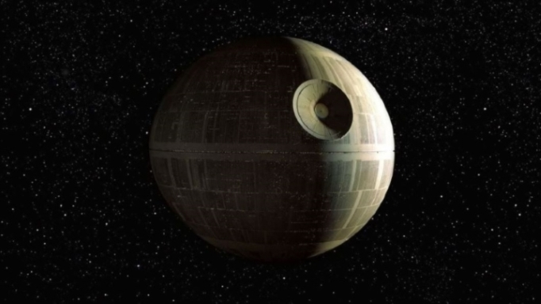

Opis: Gwiazda Śmierci to największe osiągnięcie inżynierii Imperium Galaktycznego, stanowiące jednocześnie symbol terroru i opresji. Ta stacja bojowa miała średnicę 160 km i była w stanie zniszczyć całe planety za pomocą jednego strzału z superlasera. Jej konstrukcja trwała dekady, a przy jej budowie pracowali zarówno naukowcy, jak i niewolnicy.
Zarówno pierwsza, jak i druga Gwiazda Śmierci odegrały kluczową rolę w galaktycznych wojnach. Pierwszą zniszczył Luke Skywalker podczas bitwy o Yavin, a druga została unicestwiona podczas bitwy o Endor.
Znaczenie: Gwiazda Śmierci jest symbolem technologii, która w rękach tyranii staje się narzędziem masowej destrukcji.
 ➡